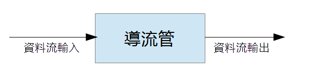
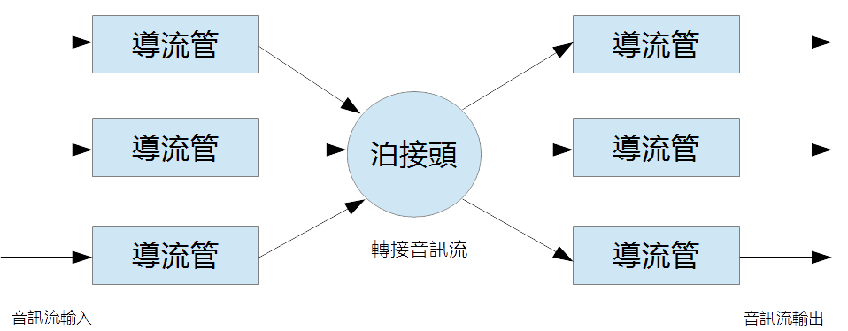

導流管的繼承處理
「導流管」（Conduit）是CIOS「集智作業系統」當中的重要觀念，「集智作業系統」的運作主體是「知識」，「知識設 計」與「知識運算」是「集智作業系統」的最主要操作及功能。作為感知與互動系統的一部分，「CIOS音訊核心」必須經常性地 「自主性泊接」，方便選擇性地接收知識或是傳達訊息。《Conduit/Junction》是「集智作業系統」當中處理知識信息流的最主要方式，當中「CIOS音訊核心」的出入 口，即為「導流管」（Conduit）。「導流管」觀念也是CIOS Audio Core與其他音訊處理介面最大不同之處，在範例程式當中，我們也使用了少量的「集智作業系統」的《Conduit/Junction》來示範「導流管」 的各層面應用。「雅典娜輸入法」的語音辨識及語音輸出，即使用這種方法實現的。
「導流管」對外還可以泊接許多不同功能的《Conduit/Junction》，例如，TTS、語音辨識及音樂倉庫輸出等 等。使用「導流管」（Conduit）與「泊接」（Junction）的方法，可以使得音訊設備的應用十分地靈活。
一般的開發使用者，通常都只需要實作自己的「導流管」，將音訊從音訊設備接收進來或是輸出到音訊設備，因此，這個部分我們將 詳細解釋各種應用方法。
導流管的定義

就最簡單的觀點來說，導流管只有一個資料流輸入及一個資料流輸出。就「CIOS音訊核心」系統當中，「資料流輸入」接到「音 訊驅動介面」時，即為「錄音」，「資料流輸出」接到「音訊驅動介面」時，即為「播放」。
泊接頭的定義

「泊接頭」的作用是將所有類型的「導流管」泊接在一起，進行數據交換。使用「泊接頭」的方法，可以輕鬆達成比Jack Audio更強大的音訊轉換功能。
使用「導流管」與「泊接頭」是集智作業系統的主要知識處理方式。
「導流管」類別
「CIOS音訊核心」的「導流管」類別，宣告如下，開發者必須繼承其中三個函式（obtain, put, finish）：
class Conduit
{
public:
typedef enum CallBackResult {
Continue = 0 ,
Complete = 1 ,
Abort = 2 ,
Postpone = 3 }
CallBackResult ;
typedef enum ConduitDirection {
NoDirection = 0 ,
InputDirection = 1 ,
OutputDirection = 2 }
ConduitDirection ;
typedef enum FinishCondition {
Correct = 0 ,
Abortion = 1 ,
Interruption = 2 ,
Accident = 3 }
FinishCondition ;
StreamIO Input ;
StreamIO Output ;
CacInputFunction inputFunction ;
CacOutputFunction outputFunction ;
explicit Conduit (void) ;
virtual ~Conduit (void) ;
virtual int obtain (void) = 0 ;
virtual int put (void) = 0 ;
virtual void finish (ConduitDirection direction = NoDirection ,
FinishCondition condition = Correct ) = 0 ;
virtual void LockConduit (void) ;
virtual void UnlockConduit (void) ;
protected:
virtual int ObtainByFunction (void) ;
virtual int PutByFunction (void) ;
};
接收音訊流
我們使用LinearConduit來解釋如何接收音訊流。class LinearConduit : public Conduit
{
public:
explicit LinearConduit (void) ;
LinearConduit (int size) ;
virtual ~LinearConduit (void) ;
virtual int obtain (void) ;
virtual int put (void) ;
virtual void finish (ConduitDirection direction = NoDirection ,
FinishCondition condition = Correct ) ;
virtual int setBufferSize (int size) ;
virtual int size (void) const ;
virtual unsigned char * window (void) const ;
protected:
unsigned char * buffer ;
int Size ;
virtual int LinearPut (void) ;
};
LinearConduit實際上僅繼承了put及finish函式，obtain函式直接返回了Complete，put 函式當中直接呼叫了LinearPut函式：
int LinearConduit::LinearPut(void)
{
if ( Input . isNull ( ) ) return Abort ;
long long bs = Input.Total() ;
if ( bs <= 0 ) return Continue ;
if ( bs > Size ) bs = Size ;
int dp = Size - bs ;
if ( dp > 0 ) {
::memcpy ( buffer , buffer + bs , dp ) ;
} ;
::memcpy ( buffer + dp , Input . Buffer , bs ) ;
return Continue ;
}
LinearConduit使用一個記憶體區塊，新增的音訊流不斷地從記憶體區塊的後端新增，並且將前面的記憶體向前搬動，維持整個記憶 體區塊大小一致。一般而言，LinearConduit用於FFT或是語音辨識當中的語音活動偵測（Voice Activity Detection）。
如果您想要使用FFT將語音轉換到頻率領域，一般而言，LinearConduit的緩衝區時間都是設定為一秒，也就是與取 樣率相同。
在LinearConduit函式當中，我們可以看到，我們將Input.Buffer的內容往自己的記憶體區塊搬動，總數 量由Input.Total()這個函式來決定，Input.Total()的值是( BytesPerSample * FrameCount ) ，這個數值並不保證是固定的數值。
當我們需要使用LinearConduit的音訊內容時，只要用下列函式即可：
LinearConduit.window()
如果您想要將音訊波形顯示，可以參考範例程式：CiosAudio/Examples/Qt/CaWaveFreqFFT
供應音訊流
我們使用BridgeConduit來解釋如何供應音訊流。class BridgeConduit : public Conduit
{
public:
LoopBuffer Buffer ;
explicit BridgeConduit (void) ;
virtual ~BridgeConduit (void) ;
virtual void setBufferSize (int size,int margin) ;
virtual int obtain (void) ;
virtual int put (void) ;
virtual void finish (ConduitDirection direction = NoDirection ,
FinishCondition condition = Correct ) ;
virtual void LockConduit (void) ;
virtual void UnlockConduit (void) ;
protected:
Mutex mutex ;
int BridgeObtain (void) ;
int BridgePut (void) ;
};
CaPlay範例程式當中的MediaPlay函式，實際上是使用BridgeConduit來做為音訊轉接的作用，其中 obtain實際呼叫了BridgeObtain函式：
int BridgeConduit::BridgeObtain(void)
{
if ( Input . Situation == StreamIO::Stagnated ) {
return Continue ;
} ;
//////////////////////////////////////////////////
if ( Output . FrameCount <= 0 ) {
Output . Situation = StreamIO::Ruptured ;
return Complete ;
} ;
//////////////////////////////////////////////////
if ( Output . isNull ( ) ) {
Output . Situation = StreamIO::Ruptured ;
return Complete ;
} ;
if ( ( Buffer . isEmpty ( ) ) &&
( StreamIO::Started == Output.Situation) ) {
Output . Situation = StreamIO::Completed ;
return Complete ;
} ;
//////////////////////////////////////////////////
int bs = Output . Total ( ) ;
Buffer . get ( Output . Buffer , bs ) ;
Output . Situation = StreamIO::Started ;
return Continue ;
}
當您需要供應音訊時，將音訊複製到Output.Buffer當中即可，總數量是由Output.Total()來決定，這 個數值並不保證是固定的數值。